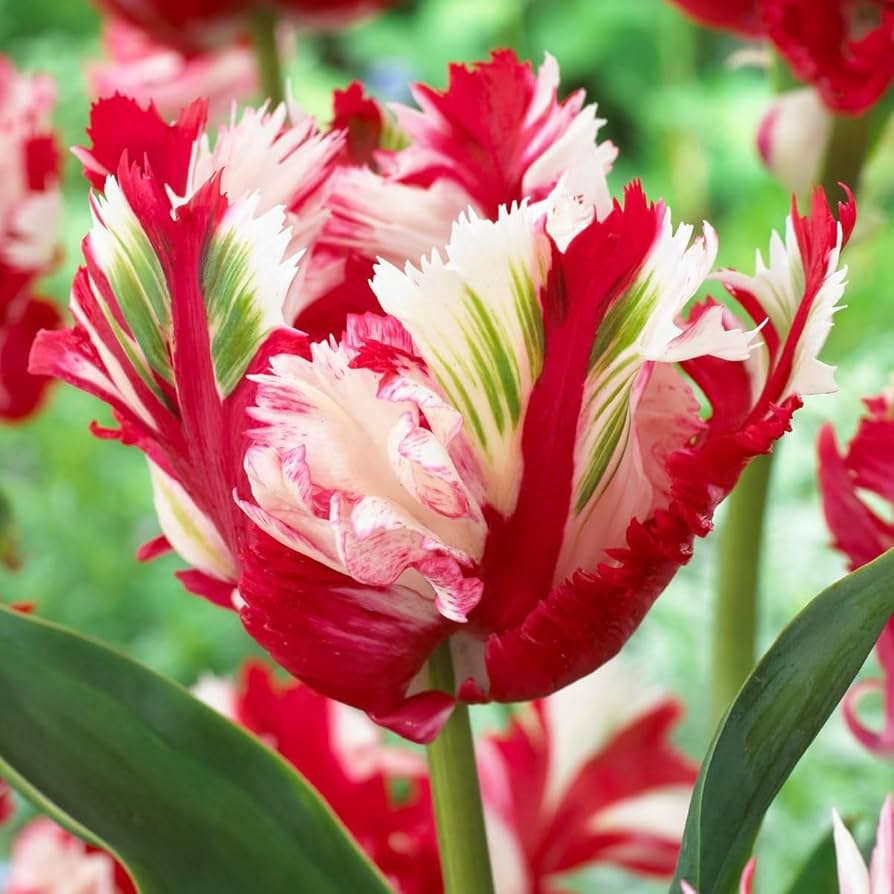
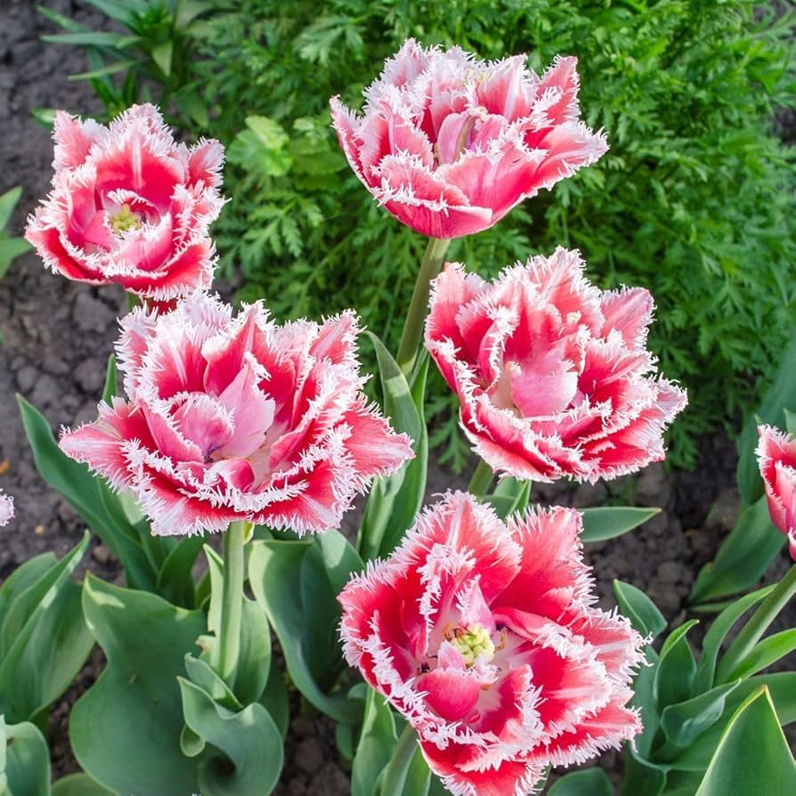

Tulipanes más llamativos
Tulipán Rembrandt
El Tulipán Rembrandt destaca por sus patrones únicos con vetas y mezclas de colores que parecen pintadas a mano. Su estilo artístico lo hace uno de los tulipanes más originales y visualmente impactantes.
Tulipán loro

El Tulipán loro es uno de los más exóticos por sus pétalos rizados y formas irregulares que parecen plumas. Sus colores intensos y combinaciones vibrantes lo hacen muy llamativo y perfecto para destacar en cualquier jardín o diseño.
Tulipán doble

El Tulipán doble se caracteriza por tener muchos pétalos, lo que le da una apariencia similar a una rosa o peonía. Su forma abundante y elegante lo convierte en una opción muy atractiva y sofisticada.